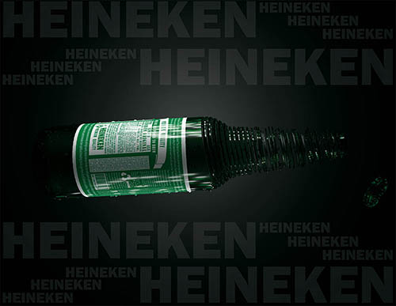
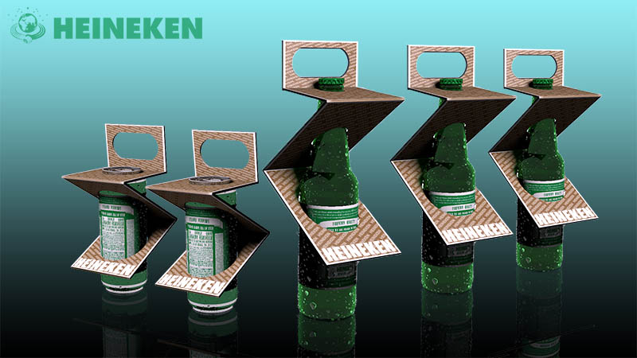

NO HARM POLICY
Every person needs to know what to drink in accordance with the law. In this case, there is a risk not only to friends and relatives, but also to yourself. You need to know how to drink in response - you will need to prepare a plan, find out your norm. We believe that responsible alcohol drinking can be a meaningful part We provide consumers with information and tools to make an informed choice in
favor of alcohol consumption or refusalTo drink responsibly we advise you to to eat well. Bread with butter, nuts or oatmeal. These products envelop the walls of the stomach and interfere with the absorption of alcohol.of a balanced lifestyle, and we encourage people to be responsible for the product.Do not mix drinks or lower degrees, It’s best to choose one familiar drink. Exotic combinations

of hot liquids may excite the imagination, but at the same time they have unpredictable effects.Do not drink carbonated liquids.Bubbles accelerate the delivery of alcohol to the brain. Do not mix beer and champagne. It is better to stretch the pleasure!
LOVE THE NATURE
destroyed by man. Chemicals entering the human body with breathing, water and food weaken the body, destroy the cell, and cause severe illnesses. This is dangerous not only for individual people, but also threatens the gene pool of the people as a whole. To prevent environmental pollution, our teachings have developed environmentally friendly and fully recyclable materials.
Heineken uses highly recyclable and environmentally friendly materials in its production. This was made possible thanks to new inventions and technologies at our enterprises. Glass, metal, cardboard, plastic can be recycled 100% without losing its properties. The scientists all over the world are sounding the alarm that air, water, land, forests and meadows, plants and animals,food, everything is mutilated and
